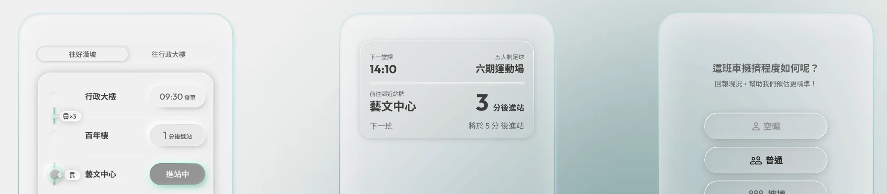

- 我的角色
- iOS 全套介面設計
- 設計範圍
- 資訊層級、操作流程與互動原型
專案背景
校園公車是政大學生往返山上和山下的重要交通工具。既有班次資訊分散，加上預估到站時間可能和現場有落差，學生在候車時往往需要反覆查看。
設計重點
在同一頁整合路線與站點
並排呈現行車方向、沿線站點、車輛位置和預估到站時間，搭配「進站中」提示，方便學生對照候車站點。
把課表連動到上車提醒
結合下一堂課的時間、地點與附近站牌。使用者可以依通勤習慣設定上下車站、搭乘時段及提前提醒時間。
納入乘客回報的現場資訊
讓乘客回報擁擠程度與準點狀況，並在路線頁呈現彙整結果，讓候車者多一個判斷依據。


設計心得
從日常通勤情境切入，讓我把班次查詢延伸成個人化服務，練習從使用者的情境規劃功能及串接操作流程。